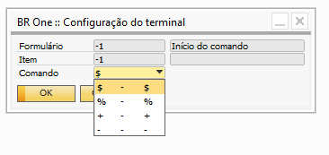

Configuração do terminal
Para acessar o cadastro de Configuração do terminal é necessário ir no menu:
Administração-> Definição-> Produção -> Configuração do terminal.
Nessa janela são configurados os comandos do terminal.

O primeiro registro é referente ao caractere que dará início ao comando no terminal. O usuário só poderá escolher entre umas das opções da lista.
{kind=link}

Os demais comandos são referentes ao comando das telas. O usuário poderá escolher um comando que seja um caractere entre A-Z ou um número entre 0-9.

BR One :: É permitido apenas caracteres de A-Z e números de 0-9.
Caso seja inserido um comando que já foi usado para a mesma tela, a seguinte mensagem de erro será exibida:

BR One :: Comando já esta sendo usado pelo item x deste mesmo formulário.
Caso o usuário tente salvar sem informar um comando, a seguinte mensagem de erro será exibida:

BR One :: Informe um comando.
Esses comandos serão utilizados para realização de apontamentos através da tela de Terminal de apontamento.